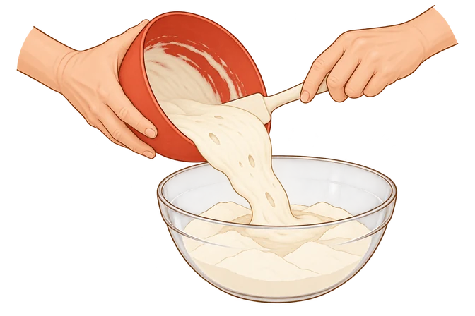
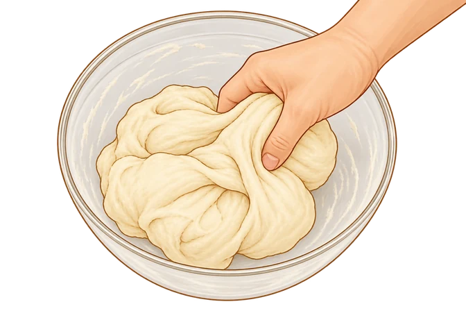
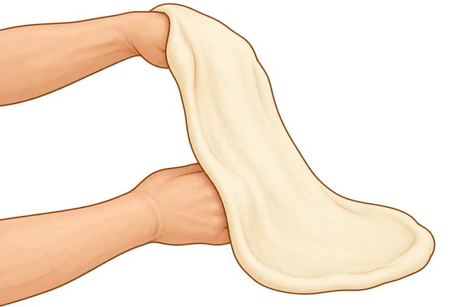

01 · Prefermenti · Poolish, Come si fa, passo 3
Il poolish entra nell’impasto finale

Versa il poolish nella farina e nell’acqua dell’impasto finale, recuperandolo dal recipiente con una spatola.02 · Prefermenti · Autolisi, Come si fa, passo 3
Riprendere l’impasto dopo l’autolisi

Dopo il riposo di autolisi, incorpora gli ingredienti previsti dal procedimento. La mano stringe e ripiega la massa nella ciotola.03 · Problemi e soluzioni · P02/P16, prevenzione durante la stesura
Sostenere la pasta sul dorso delle mani

Il dorso delle mani sostiene la pasta durante l’allargamento, distribuendo il peso senza puntare le dita nel centro. Se oppone resistenza, appoggiala e lasciala riposare.